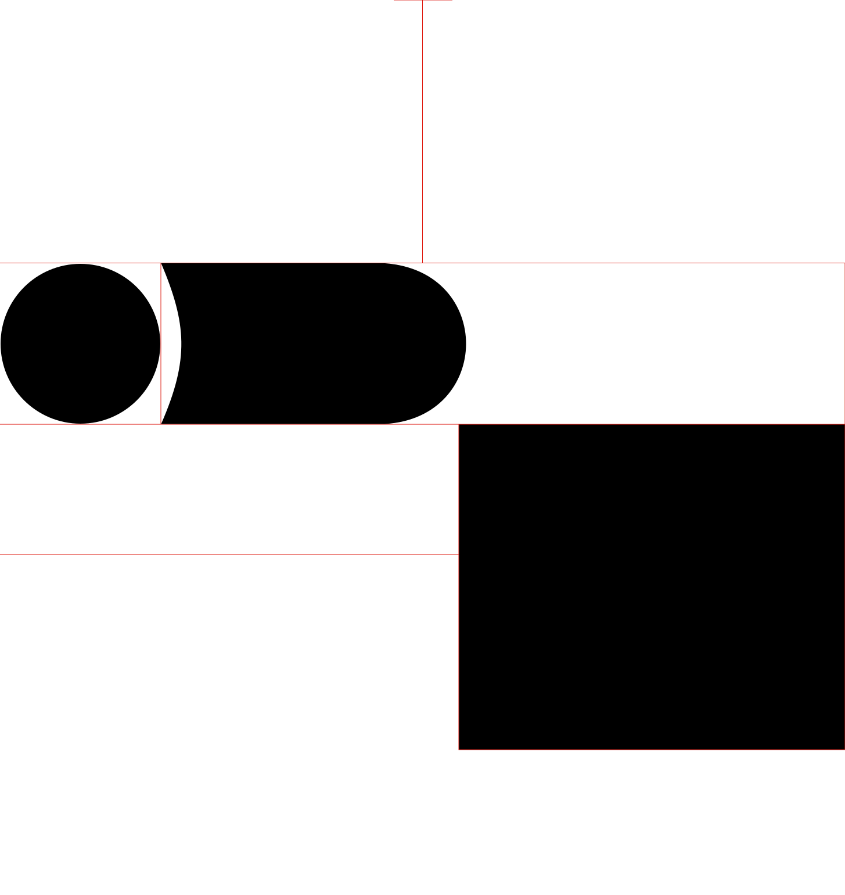

THE BIRTH OF THE KATANA
カタナの誕生カタナのKatanas are a type of Japanese sword that appeared around 1400. They were a new style of sword developed from the older “tachi”.
The earliest origins of katana can be traced 1300 years back. The first Japanese swords were variations of the Chinese jian (chokuto). But during the early Heian period around 700A.D., the precursor to the katana began to take shape.